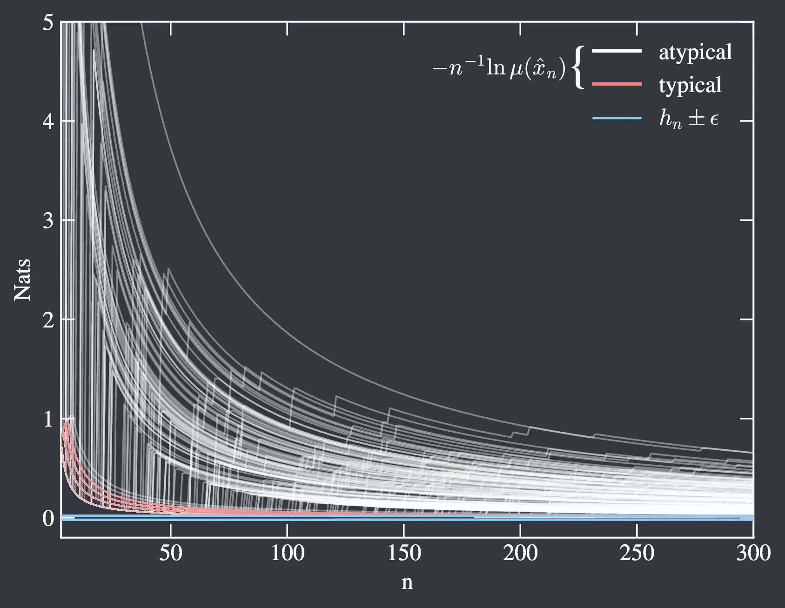

Stochastic Thermodynamics & Information Theory
"Information is the resolution of uncertainty."
–Claude Shannon.
Overview
The distribution of states for typical and atypical paths of a particular model. Since Claude Shannon's seminal work on information, there has been progress relating information theory to thermodynamics. The Shannon entropy, and its relationship to the thermodynamic entropy, is at the core of this. Given the connections between information theory and thermodynamics, one can ask: do there exist decompositions of thermodynamic observables into information-theoretic quantities? My work provides an answer by demonstrating information-theoretic decompositions of thermodynamic observables that track the reversible exchange of entropy between a system and its environment, the irreversible internal production of entropy within a system, and the total change of entropy from these two contributions. My resulting decomposition is entirely in terms of information-theoretic quantities known as finite-time entropy rates. This connection between information theory and thermodynamics holds arbitrarily far from equilibrium and even in the presence of external forces.
Since my work focuses on the irreversible production of entropy, it is naturally related to the second law of thermodynamics. I have shown that this irreversible component of the entropy can be seen as a (pre)-measure of time-reversal asymmetry even in the case of discrete-time. I have also illustrated how this decomposition sheds light on ensemble averages versus experimental realizations by building on previous work regarding the (information) typicality of particular paths.
Stochastic Thermodynamics in Python (STP)
 A typical set sampled using STP. To facilitate my work, I've written Stochastic Thermodynamics in Python (STP), a Python library meant to construct random quantities and track their information-theoretic properties. These objects include continuous time rate matrices, discrete time transition matrices, and matrices representing 3-state self assembly models. STP also facilitates calculating information-theoretic quantities such as path entropies, entropy rates, the entropy production, and even a typical set on sampled path spaces.
STP is available at PyPi, documentation is available at ReadTheDocs. The code is also available directly from my
You can learn more about this research and the Green research group on information theory and stochastic thermodynamics at UMass Boston by going to Professor Green's research page.